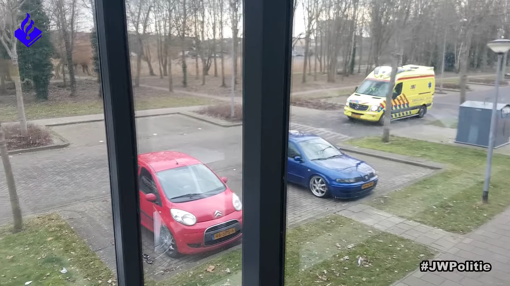
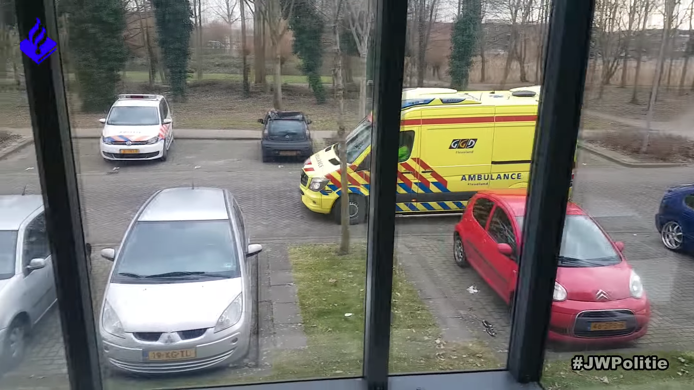
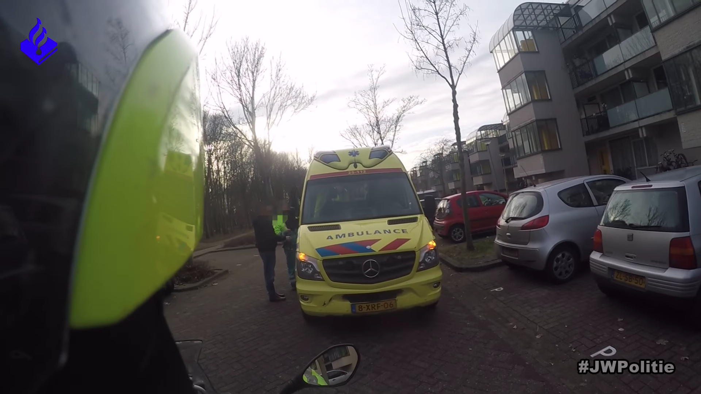
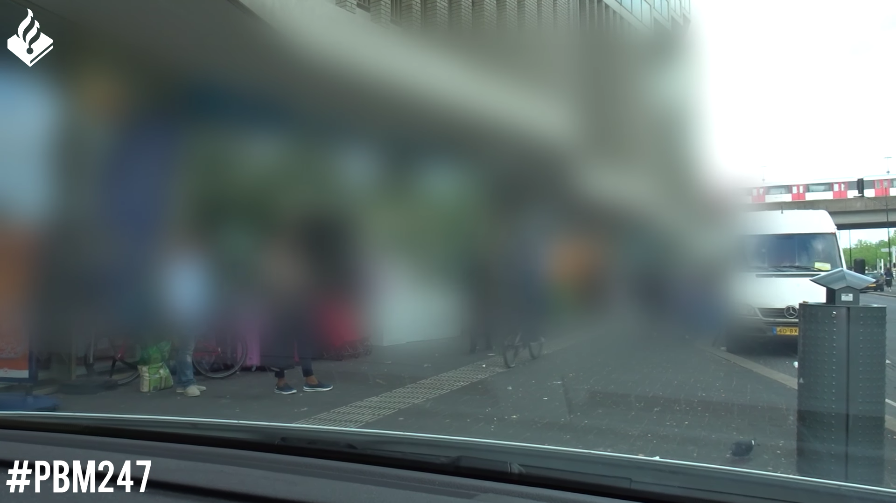
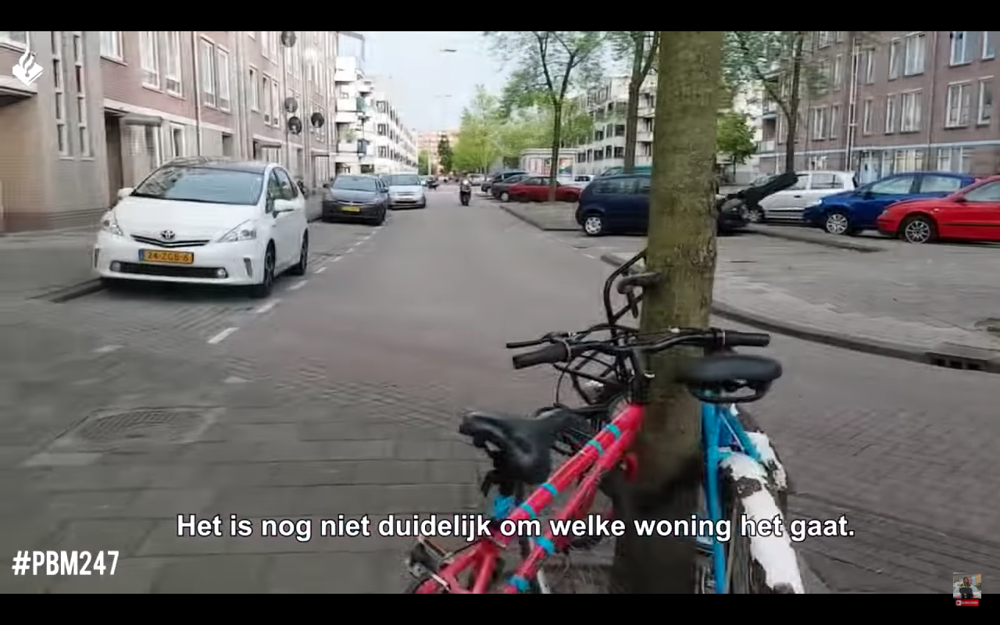
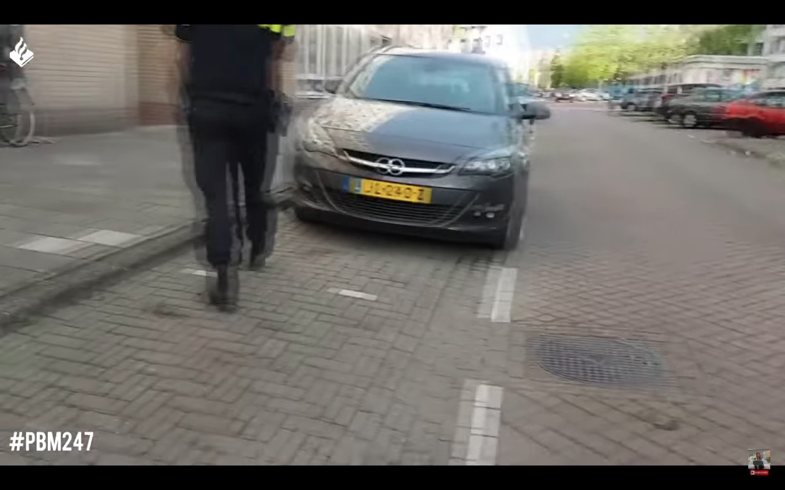
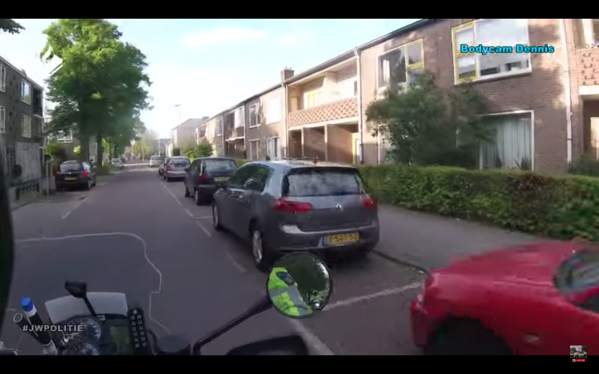
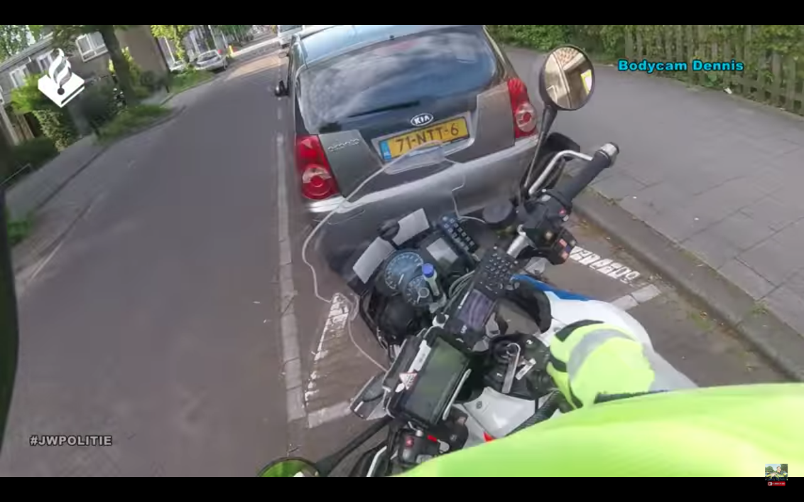
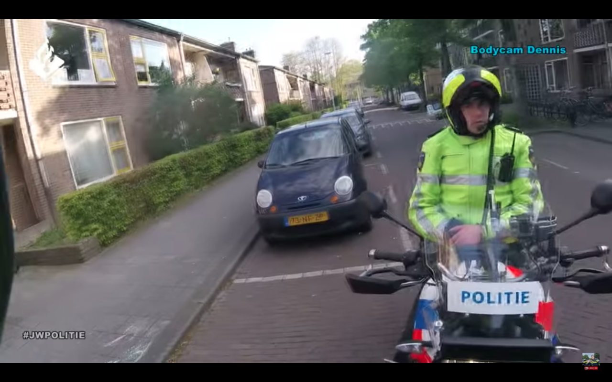

1
Vlog Jan-Willem #14

2
Vlog Jan-Willem #14

3
Vlog Jan-Willem #14
4
Vlog Tess #45
5
Vlog Tess #45

6
Vlog Tess #45

7
Vlog Tess #15

8
Vlog Tess #15

9
Vlog Jan-Willem #4

10
Vlog Jan-Willem #4

11
Vlog Jan-Willem #4
Terug naar auto's en kentekenplaten